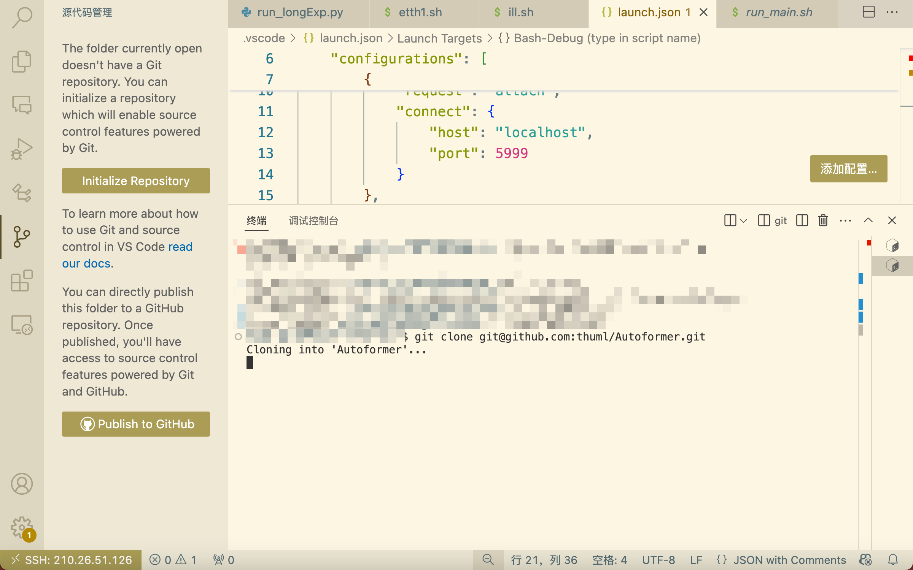
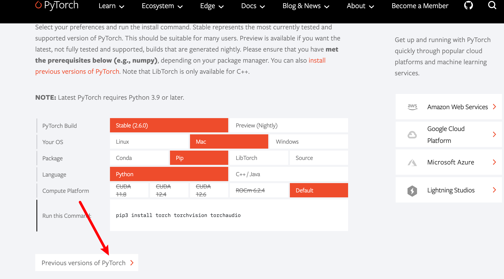

Autoformer¶
github 源码主页¶
Autoformer (NeurIPS 2021) 自动成型机 (NeurIPS 2021)
Autoformer: Decomposition Transformers with Auto-Correlation for Long-Term Series Forecasting Autoformer：用于长期序列预测的具有自相关的分解变压器
Time series forecasting is a critical demand for real applications. Enlighted by the classic time series analysis and stochastic process theory, we propose the Autoformer as a general series forecasting model [paper]. Autoformer goes beyond the Transformer family and achieves the series-wise connection for the first time. 时间序列预测是实际应用的关键需求。受经典时间序列分析和随机过程理论的启发，我们提出了 Autoformer 作为通用序列预测模型 [论文]。Autoformer**超越了 Transformer 家族，首次实现了序列连接。**
In long-term forecasting, Autoformer achieves SOTA, with a 38% relative improvement on six benchmarks, covering five practical applications: energy, traffic, economics, weather and disease. 在长期预测中，Autoformer 实现了 SOTA，在六个基准上**相对提升了 38%** ，涵盖了**能源、交通、经济、天气和疾病**五个实际应用。
News (2023.08) Autoformer has been included in Hugging Face. See blog. 🚩新闻(2023.08) Autoformer 已包含在Hugging Face中。查看博客。
🚩News (2023.06) The extension version of Autoformer (Interpretable weather forecasting for worldwide stations with a unified deep model) has been published in Nature Machine Intelligence as the Cover Article. 🚩新闻(2023.06) Autoformer 的扩展版本 (使用统一深度模型为全球站点提供可解释的天气预报) 在《自然机器智能》杂志上作为封面文章发表。
🚩News (2023.02) Autoformer has been included in our [Time-Series-Library], which covers long- and short-term forecasting, imputation, anomaly detection, and classification. 🚩新闻(2023.02) Autoformer 已包含在我们的[时间序列库]中，它涵盖长期和短期预测、归纳、异常检测和分类。
🚩News (2022.02-2022.03) Autoformer has been deployed in 2022 Winter Olympics to provide weather forecasting for competition venues, including wind speed and temperature. 🚩新闻（2022.02-2022.03）Autoformer 已部署在2022 年冬奥会，为比赛场馆提供天气预报，包括风速、温度等。
准备¶
git clone¶

克隆远程仓库的方法：
（1）HTTPS，在把本地仓库的代码 push 到远程仓库的时候，需要验证用户名和密码
（2）SSH，git 开头的是 SSH 协议，这种方式在推送的时候，不需要验证用户名和密码，但是需要在 github 上添加SSH公钥的配置（推荐）
（3）zip download
我这里使用了 SSH 配置：

服务器直接 git clone 是很慢。所以本地 git clone，然后再上传服务器。

本地下载好以后，使用 FileZilla上传到远程服务器
down到本地以后，删除 .git文件，取消连接着远程仓库


readme¶
下载数据集
设置数据集路径

调试配置¶
新建配置文件

修改配置文件

修改配置文件
1 2 3 4 5 6 7 8 9 | |
修改 sh 文件
1 | |
新建 python 虚拟环境¶
本实验所需要的实验环境
Install Python 3.6, PyTorch 1.9.0.
参考命令
1 2 3 4 5 6 7 8 | |
激活、退出：
1 2 3 4 5 6 | |
用 requirements.txt 安装需要的库
1 2 3 | |
启动 sh 文件：
1 | |
适用于本实验的所有命令 :
1 2 | |
pytorch 官网查看所需命令


1 | |
requirements¶
1 | |
或者：
1 2 3 4 5 6 7 8 | |
配置好以后，成功进入调试：

开始调试¶
代码相似度极高。
Autoformer init：36（18）-》24

setting:
1 | |
model_id 36 预测 24 步长（label=18）、AutoFormer 模型，自定义数据集，预测多变量，输入序列 36，标签序列 18，预测序列 24，嵌入维度 512，注意力头数 8，2层编码层，1 层解码层，
1 2 3 4 5 6 | |
Autoformer model
1 2 3 4 5 6 7 8 9 10 11 12 13 14 15 16 17 18 19 20 21 22 23 24 25 26 27 28 29 30 31 32 33 34 35 36 37 38 39 40 41 42 43 44 45 46 47 48 49 50 51 52 53 54 55 56 57 58 59 60 61 62 63 64 65 66 67 68 69 70 71 72 73 74 75 76 77 78 79 80 81 82 83 84 85 86 87 88 89 90 91 92 93 94 95 96 97 98 99 100 101 102 103 104 105 106 107 108 109 110 111 112 113 114 115 116 117 118 119 120 121 122 123 124 125 126 127 128 129 | |
数据集的加载是完全一样的。